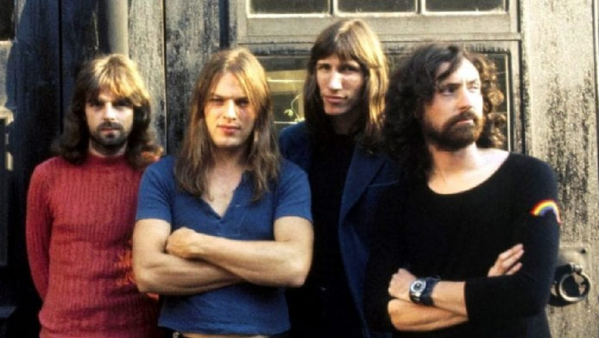
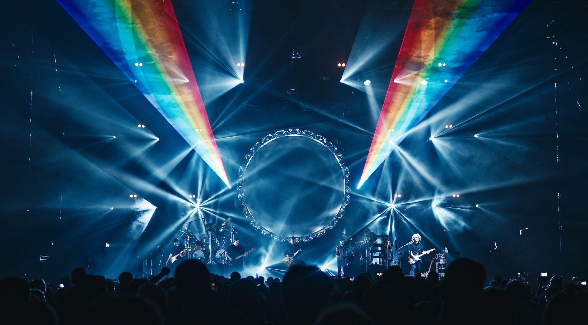

Uma banda de rock inglesa formada em Londres em 1965

A banda foi fundada em 1965 por , Syd Barrett (guitarra, vocal principal), Nick Mason (bateria), Roger Waters (baixo, vocal) e Richard Wright (teclados, vocal).
Com Barrett como principal compositor, lançaram dois singles de sucesso, " Arnold Layne " e " See Emily Play ", e o bem-sucedido álbum de estreia, The Piper at the Gates of Dawn (todos de 1967). David Gilmour (guitarra, vocal) juntou-se à banda em 1967; Barrett saiu em 1968 devido a problemas de saúde mental.
A banda foi formada em Londres (inicialmente com outros nomes como "Sigma 6" e "The Tea Set")
Todos os quatro membros restantes contribuíram com composições, embora Waters tenha se tornado o principal letrista e líder temático, concebendo os conceitos por trás dos álbuns de estúdio de maior sucesso do Pink Floyd: The Dark Side of the Moon (1973), Wish You Were Here (1975), Animals (1977) e The Wall (1979). O filme musical baseado em The Wall , Pink Floyd – The Wall (1982), ganhou dois prêmios BAFTA . O Pink Floyd também compôs diversas trilhas sonoras para filmes .
"We're just two lost souls swimming in a fish bowl, year after year"(Somos apenas duas almas perdidas nadando em um aquário, ano após ano)
"So, so you think you can tell heaven from hell?
Blue skies from pain?
Can you tell a green field from a cold steel rail?
A smile from a veil?
Do you think you can tell?"
Pink Floyd -Wish you were here

Você pode conhecer mais sobre a banda clicando aqui